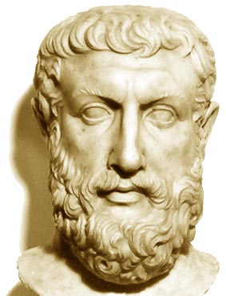
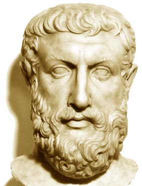

O quão importante é a filosofia?
Desde os primórdios, temos uma base de dados filosóficos que nos ajudam a pensar um pouco mais sobre a vida, nossa de maneira isolada ou em conjunto em sociedade, seja uma utopia ou distopia, democracia, monarquia, anarquia ou autarquia. Independentemente de tudo o que já houve, sempre ficaram lições, que podem ser interpretadas de maneira mais superficial ou termos um entendimento profundo, trazendo conhecimento e experiência para nossa vida.
Podemos dizer que as filosofias de Platão, Sócrates, Friedrich Nietzsche, entre outros, nos trazem uma sensação de sabedoria momentânea quando as entendemos e conseguimos aplicar esse conhecimento em nossas vidas nos dias atuais. Aqui, vou listar alguns filósofos e algumas filosofias que marcaram o crescimento da vida humana, informações que foram relevantes ao longo dos tempos, outras que já têm um significado superficial demais para fazer tanto sentido quanto na época em que foram pensadas e compartilhadas, mas que, de todo modo, fazem parte da história marcante da filosofia.
 
